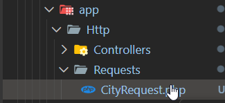
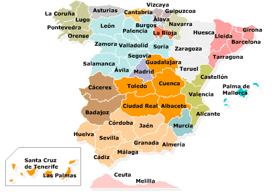

UD7- API-Rest
2- Práctica API City
Al trabajar con Laravel, no sólo trabajaremos con Monolito, sino que también lo haremos como BackEnd puro,
- Serviremos los datos a través de una API REST (enlace)
- Es importante comprender la teoría de API Rest, sus verbos y las técnicas y tecnologías más usadas.
- Un segundo sistema, frontal, hace el consumo desde React, VUE...
- En esta API se implementa request personalizadas (Custom Request)
- CRUD a través de API.

Enlace Video GOGODEV Clase 6 API
🇪🇸
El resultado de aprendizaje asociado a esta unidad es el RA 7:
RA7 Desarrolla servicios Web analizando su funcionamiento e implantando la estructura de sus componentes
- A Se han reconocido las características propias y el ámbito de aplicación de los servicios Web.
- B Se han reconocido las ventajas de utilizar servicios Web para proporcionar acceso a funcionalidades incorporadas a la lógica de negocio de una aplicación.
- C Se han identificado las tecnologías y los protocolos implicados en la publicación y utilización de servicios Web.
- D Se ha programado un servicio Web.
- E Se ha creado el documento de descripción del servicio Web.
- F Se ha verificado el funcionamiento del servicio Web.
- G Se ha consumido el servicio Web.
Cómo instalar API Rest en Laravel 12
php artisan install:api
Instalar la API en Laravel 11+ es sencillo: basta con ejecutar un comando, el cual creará lo necesario para poder desarrollar APIs en Laravel haciendo uso de Laravel Sanctum.
En versiones anteriores de Laravel, la API ya venía instalada y configurada por defecto.
1. Creación API y Rutas Api
- Crear proyecto en la carpeta 2API-Request-Resource
composer create-project laravel/laravel apicity
INFO Application key set successfully.
Pueden ser entornos complementarios el hecho de tener un monolito y una API CRUD en el mismo proyecto; por ejemplo, un panel de admin con vistas y una API REST para servir a un cliente.
Laravel 12 / install:api
Pequeña actualización para Laravel 11+, puesto que no trae el API por defecto.
- Ejecutar en la terminal
php artisan install:api- Al finalizar la instalación nos pide lo siguiente, lo vamos a hacer aunque no vayamos a autenticarnos
INFO API scaffolding installed. Please add the [Laravel\Sanctum\HasApiTokens] trait to your User model.

- Añadimos HasApiTokens al modelo User como nos pide la instalación API

No necesariamente tendremos sistemas puramente backend o sistemas front, pueden ser sistemas híbridos.
2. Crear BBDD
OPCIONAL, se puede crear la base de datos en Mysql, pero nosotros lo vemos en sqlite.
Archivo/Ruta si se desea cambiar a Mysql: .env
3. Modelo City y la migración
Al igual que en el anterior proyecto CRUD con vistas, vamos a realizar un modelo City (ciudad) pero esta vez para servirlo con una API REST.
php artisan make:model City --migration
Con lo que obtenemos el OK y las rutas donde se ubican:
INFO Model [app/Models/City.php] created successfully.
INFO Migration [database/migrations/xxxx_xx_xx_xxxxxx_create_cities_table.php] created successfully.
Modelo
Ruta: app/Models/City.php
hidden: campos que NO quieres devolver en el JSON de respuestafillable/guarded: campos que se pueden rellenar de forma masiva (mass assignment)
Como vamos a usar pocos campos, podemos dejar el modelo abierto usando $guarded = [] (equivale a “todo es rellenables”):
<?php
namespace App\Models;
use Illuminate\Database\Eloquent\Factories\HasFactory;
use Illuminate\Database\Eloquent\Model;
class City extends Model
{
use HasFactory;
protected $guarded = [];
}
Migración
Ruta: database/migrations/xxxx_xx_xx_xxxxxx_create_cities_table.php
Preparamos la creación de la tabla cities y añadimos los campos necesarios:
name(nombre de la ciudad)population(población)postalcode(código postal)
/**
* Run the migrations.
*/
public function up(): void
{
Schema::create('cities', function (Blueprint $table) {
$table->id();
$table->string('name', 255);
$table->unsignedInteger('population')->default(0);
$table->string('postalcode', 10)->nullable();
$table->timestamps();
});
}
Ejecuta:
php artisan migrate
4. Rutas API (routes/api.php)
Ahora las rutas van en routes/api.php (recuerda haber instalado API con php artisan install:api).
- Al igual que en las rutas web, tenemos un route dispatcher para los diferentes métodos.
- Se asocia cada URI con su controlador.
- Vamos a hacer lo mismo pero en
api.php.
Todavía no la vamos a proteger, haremos una API pública, por lo que comentamos (si quieres) la ruta que trae por defecto Laravel con middleware Auth Sanctum.
APIs públicas
Como seguro sabrás, existen múltiples APIs públicas para practicar y consumir sus datos desde el cliente

5. Controlador --resource
Si queremos hacer la gestión de un CRUD podemos ahorrarnos la creación de todas las funciones añadiéndole --resource al controlador.
php artisan make:controller CityController --resource
Así Laravel nos genera los métodos típicos: index, store, show, update, destroy (y también create/edit aunque en API no se usan).
6. Registrar la ruta Resource en api.php
En routes/api.php:
use App\Http\Controllers\CityController;
use Illuminate\Support\Facades\Route;
Route::resource('city', CityController::class);
Para comprobar las rutas generadas:
php artisan route:list
Ejemplo (orientativo) de rutas:
GET|HEAD api/city ................................................................................ city.index › CityController@index
POST api/city ................................................................................ city.store › CityController@store
GET|HEAD api/city/create ......................................................................... city.create › CityController@create
GET|HEAD api/city/{city} ......................................................................... city.show › CityController@show
PUT|PATCH api/city/{city} ......................................................................... city.update › CityController@update
DELETE api/city/{city} ......................................................................... city.destroy › CityController@destroy
GET|HEAD api/city/{city}/edit ..................................................................... city.edit › CityController@edit
Nota:
createyeditson de vistas; en API normalmente no se usan. Si quieres evitar que se creen, usaRoute::apiResource(...)y--apial crear el controlador.
7. CityController (API)
Ruta: app/Http/Controllers/CityController.php
Lo primero, incluir el modelo y el tipo de respuesta JSON:

use App\Models\City;
use Illuminate\Http\JsonResponse;
Función index (GET /api/city)
Recupera todas las ciudades y las devuelve como JSON:
public function index(): JsonResponse
{
$cities = City::all();
return response()->json($cities, 200);
}
8. Validación con CityRequest (recomendado)
Custom request
LasCustom Requests (o más comúnmente, Form Requests) en Laravel son =clases personalizadas encargadas de encapsular la lógica de validación y autorización de datos, separándola del controlador= . Ayudan a mantener los controladores limpios, organizan el código y facilitan la reutilización de reglas de validación en la aplicación.
Quedan almacenadas en la carpeta Request

Serán clases que sustituirán a las Request por defecto:

Vamos a generar una request específica en lugar de usar la Request genérica. No es obligatorio, pero sí muy recomendable.
php artisan make:request CityRequest
Ruta: app/Http/Requests/CityRequest.php
Cambiamos authorize() a true:
public function authorize(): bool
{
return true;
}
Y definimos reglas:
public function rules(): array
{
return [
'name' => 'required|string|min:2|max:255',
'population' => 'required|integer|min:0',
'postalcode' => 'nullable|string|max:10',
];
}
En el controlador, importa la request:
use App\Http\Requests\CityRequest;
9. Store (POST /api/city)
En una API, store es la acción para crear.
public function store(CityRequest $request): JsonResponse
{
$city = City::create($request->validated());
return response()->json([
'success' => true,
'data' => $city
], 201);
}
10. Show (GET /api/city/)
Busca una ciudad por ID y la devuelve.
public function show(string $id): JsonResponse
{
$city = City::find($id);
return response()->json($city, 200);
}
Mejora típica: si no existe, devolver 404 (lo veremos más adelante si quieres).
11. Update (PUT/PATCH /api/city/)
public function update(CityRequest $request, string $id): JsonResponse
{
$city = City::find($id);
$city->name = $request->name;
$city->population = $request->population;
$city->postalcode = $request->postalcode;
$city->save();
return response()->json([
'success' => true,
'data' => $city
], 200);
}
12. Destroy (DELETE /api/city/)
public function destroy(string $id): JsonResponse
{
$city = City::find($id);
if ($city) {
$city->delete();
}
return response()->json([
'success' => true
], 200);
}
13. Peticiones de cliente (Thunder Client)
Vamos a probarlo con la extensión de VSCode Thunder Client (o Postman).
Arranca el servidor:
php artisan serve
Crear ciudad (POST)
URL:
http://localhost:8000/api/city
Body JSON de ejemplo:
{
"name": "Córdoba",
"population": 326039,
"postalcode": "14001"
}
Index (GET)
http://localhost:8000/api/city
Store
http://localhost:8000/api/city/
{
"name": "Córdoba",
"population": 328000,
"postalcode": "14001"
}

Update (PUT/PATCH)
http://localhost:8000/api/city/1
{
"name": "Córdoba",
"population": 328000,
"postalcode": "14001"
}
Delete (DELETE)
http://localhost:8000/api/city/1
14. PROTECTED / HIDDEN
En el modelo puedes ocultar campos que NO quieres devolver en el JSON:
protected $hidden = ['created_at', 'updated_at'];
Así en el index (GET /api/city) ya no aparecerán esos campos.
15. ¿Cómo puedo modificar los datos para devolverlos?
Si quieres transformar la respuesta (por ejemplo, renombrar campos, añadir textos, etc.) utiliza API Resources.
API Resources
Vamos a crear un resource para definir exactamente qué se devuelve y cómo.
php artisan make:resource CityResource
Ruta: app/Http/Resources/CityResource.php
Ejemplo (incluye un campo example que NO existe en la BD, a modo didáctico):
<?php
namespace App\Http\Resources;
use Illuminate\Http\Request;
use Illuminate\Http\Resources\Json\JsonResource;
class CityResource extends JsonResource
{
public function toArray(Request $request): array
{
return [
'id' => $this->id,
'name' => 'City: ' . $this->name,
'population' => $this->population,
'postalcode' => $this->postalcode,
'example' => 'This is an example',
];
}
}
CityController usando CityResource
Importa el resource:
use App\Http\Resources\CityResource;
use Illuminate\Http\Resources\Json\JsonResource;
Index con Resource
public function index(): JsonResource
{
return CityResource::collection(City::all());
}

Store devolviendo el recurso creado
public function store(CityRequest $request): JsonResponse
{
$city = City::create($request->validated());
return response()->json([
'success' => true,
'data' => new CityResource($city),
], 201);
}
Update devolviendo el recurso actualizado
public function update(CityRequest $request, string $id): JsonResponse
{
$city = City::find($id);
$city->name = $request->name;
$city->population = $request->population;
$city->postalcode = $request->postalcode;
$city->save();
return response()->json([
'success' => true,
'data' => new CityResource($city),
], 200);
}
Conclusiones
Aquí ya somos capaces de devolver datos tanto en vista como en API, y además controlar el formato de respuesta con API Resources.
💻 Amplía esta API : seeders
Documenta el proceso, personalízalo y crea esta una factoria y un seeder para que al menos se carguen 10 ciudades que te gusten
